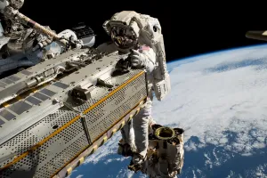
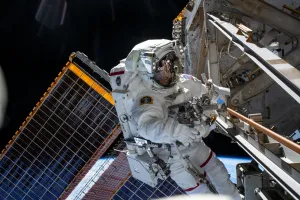
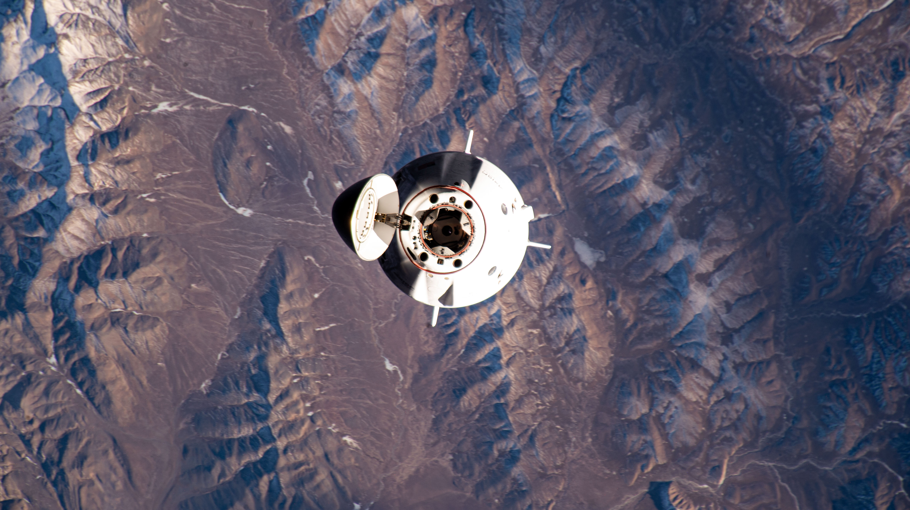
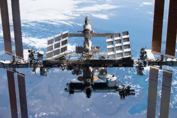
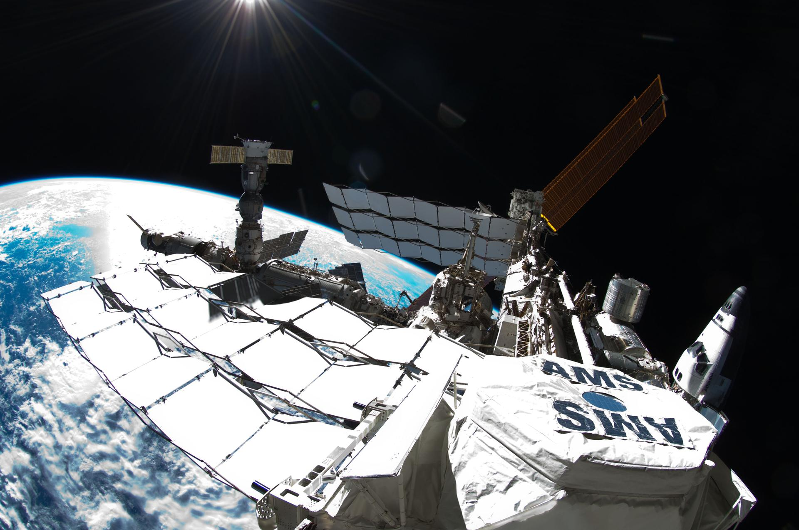
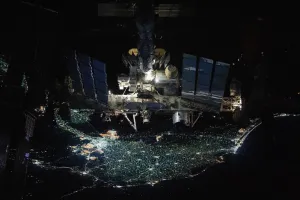
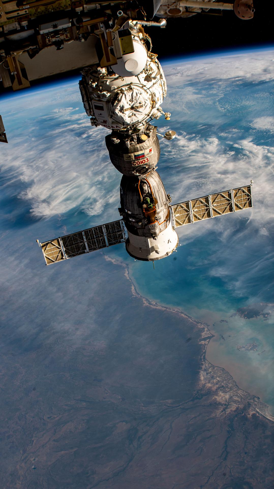
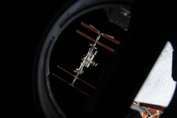
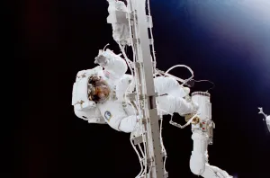

International
Space Station
A Home for Science Beyond Earth
International Space
Station 2026 Calendar
Twenty-five years ago, humanity launched a bold endeavor: to live and work together in space, not for a fleeting time, but continuously. What began as a fragile framework of modules has since grown into the most enduring platform for international cooperation in orbit — the International Space Station.

About the International
Space Station
The station was designed between 1984 and 1993. Elements of the station were in construction throughout the US, Canada, Japan, and Europe beginning in the late 1980s.
The International Space Station Program brings together international flight crews, multiple launch vehicles, globally distributed launch and flight operations, training, engineering, and development facilities, communications networks, and the international scientific research community.

Humanity's Outpost in Space
For over twenty years, the International Space Station has connected nations, inspired millions of people, and expanded humanity's understanding of life beyond Earth. It continues to shape the technologies and knowledge that will carry astronauts farther into the solar system.


Orbit Altitude — 408 km
This low-Earth orbit supports scientific research and long-duration missions.
Orbital Speed — 7.66 km/s
This high speed keeps the station in a stable orbit around Earth.
Orbit Duration — 90 Minutes
As a result, astronauts can experience multiple sunrises and sunsets each day.
Crew Capacity — Up to 7 Astronauts
This crew supports scientific experiments, maintenance, and daily station operations.
Mass — 419,725 kg
This includes its modules, equipment, structural components, and onboard systems.
Length — 109 m
Its interconnected modules provide space for laboratories, equipment, and crew activities.
Gallery









